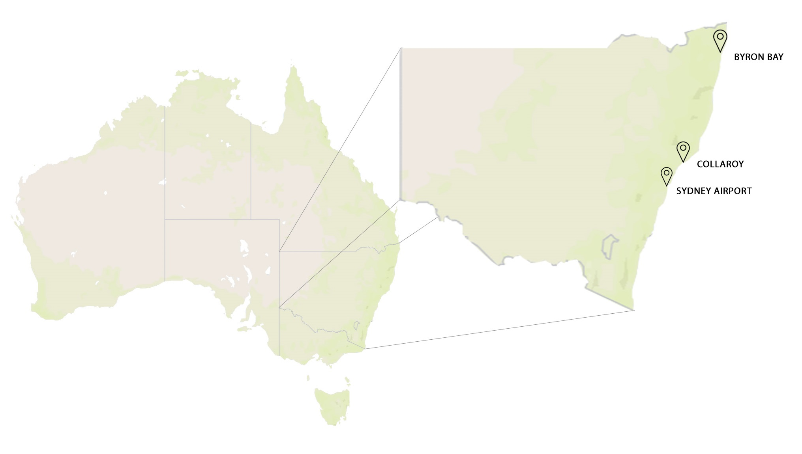
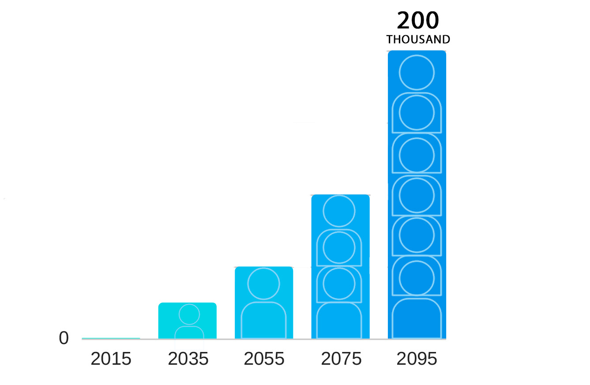

living |
| Locations under threat of being inundated include: 1) Byron Bay, and 2) Sydney's Northern Beaches and 3) Botany Bay, Sydney Airport |
Climate experts have said rising sea levels can displace more than 200 thousand people |
|  |  |
| The map below visualises the effect of sea level rise along Sydney's coastline with rising global temperatures. Data provided by Climate Central research. |
| Surging storms in Sydney's Northern Beaches caused significant erosion along the coastline. | Waves up to 8 meters high hit the coast, causing damage to neighbourhood backards. |
| What could this possibly mean to Sydney's population alongthe coast with this current rate of Global warming? | It is important to act now, to preserve our beaches and future inundation of Sydney. |
| The rising sea levels are fast becoming an overwhelming force for Sydney’s coastal. Our design confronts this issue through a practical yet still distinctive approach in order to better the future for life on Sydney’s magnificent coastline. Our proposal is threefold: the initial solution of a dam wall provides the foundation to integrate the ancillary road and terraced farm idea to nurture the reenvisioning of a coastal lifestyle. |
| The wall aims to span 20km across Collaroy beach |